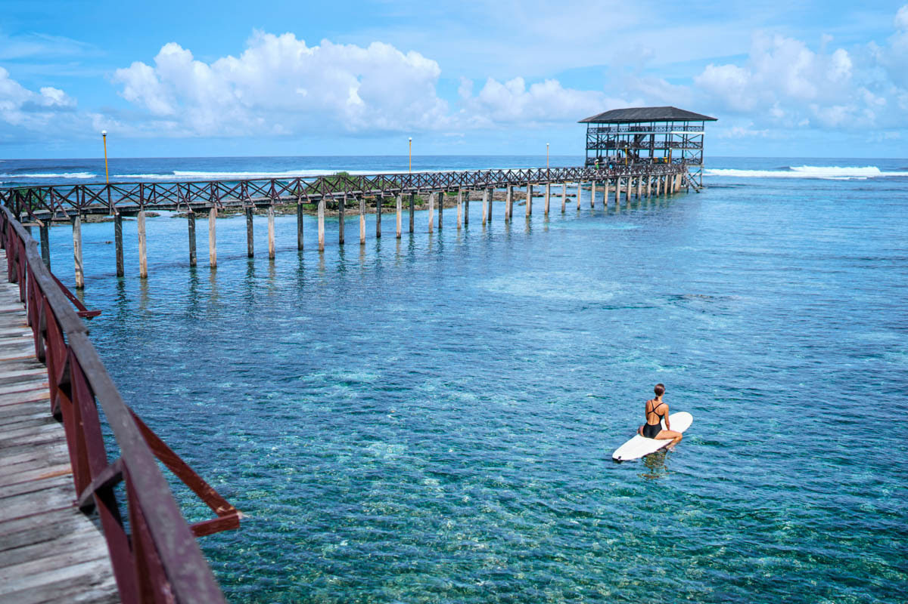

| Home | Boracay | Siargao | Puerto Princesa | Sagada | Banaue | Palawan |
|---|
|
|
|
|
|
 |
With the threat of COVID-19 pandemic, the Inter-Agency Task Force on Emerging Infectious Diseases (IATF-EID) and the Local Government Unit (LGU) have announced a set of guidelines and tourist requirements to follow before you fully enjoy your stay at the Surfing Capital of the Philippines.
1. Who are allowed to go to Siargao?
Siargao is open to residents and domestic tourists. Fully vaccinated individuals, or those who have received their last dose of the COVID-19 vaccine need to present a vaccination certificate issued by the Department of Health or a domestic COVID-19 vaccination card issued by a legitimate vaccination establishment to prove their vaccination status. Unvaccinated and partially vaccinated travelers must present a negative RT-PCR test result taken within 48 hours from arrival.
Other requirements include a valid ID, a confirmed booking in an accommodation duly accredited by the Department of Tourism (DOT) for at least 2 nights, and registration via s-pass.ph. Children 17 years and below are exempted from presenting a negative COVID-19 test.
If invited by a local resident of Surigao del Norte, you must also present a Travel Certification issued by the mayor of your destination city or municipality.
2. What are the entry points in Siargao?
Domestic tourists can enter Siargao through Sayak Airport (Siargao) and Surigao Airport. Only 1 round trip flight per day is allowed regardless of origin. Other entry points in Siargao include Eva Macapagal Passenger Terminal and Lipata Ferry Terminal.
3. What travel requirements do you need to prepare?
Here are the requirements that you need to prepare before going to Siargao:
Prepare your vaccination card or certificate (for fully vaccinated)
To show their fully vaccinated status, a traveler must present a vaccination certificate issued by the Department of Health or a domestic COVID-19 vaccination card.
Secure a negative RT-PCR or Saliva test result (for unvaccinated and partially vaccinated)
Unvaccinated and partially vaccinated tourists must provide a negative RT-PCR test result within 48 hours prior to travel to Siargao. Minors do not need to present a negative COVID-19 test.
At least 2 Days Confirmed Booking of Accommodation
Tourists must have a confirmed booking at a DOT-accredited accommodation for at least 2 days.
Book Siargao tour packages with airfare and hotel for a hassle-free trip
Siargao tour packages with hotel stay by Guide to the Philippines
Registration via S-Pass
Siargao requires visitors to secure a Travel Coordination Permit or TCP via s-pass.ph.
Traveling to Siargao Island
The required documents must be presented at the port of origin and upon arrival in Siargao.
Observe strict quarantine
Tourists must comply with the strict quarantine protocols until their arrival. Some of the mandatory guidelines include proper usage of face masks, observing proper social distancing, and regular washing of hands.